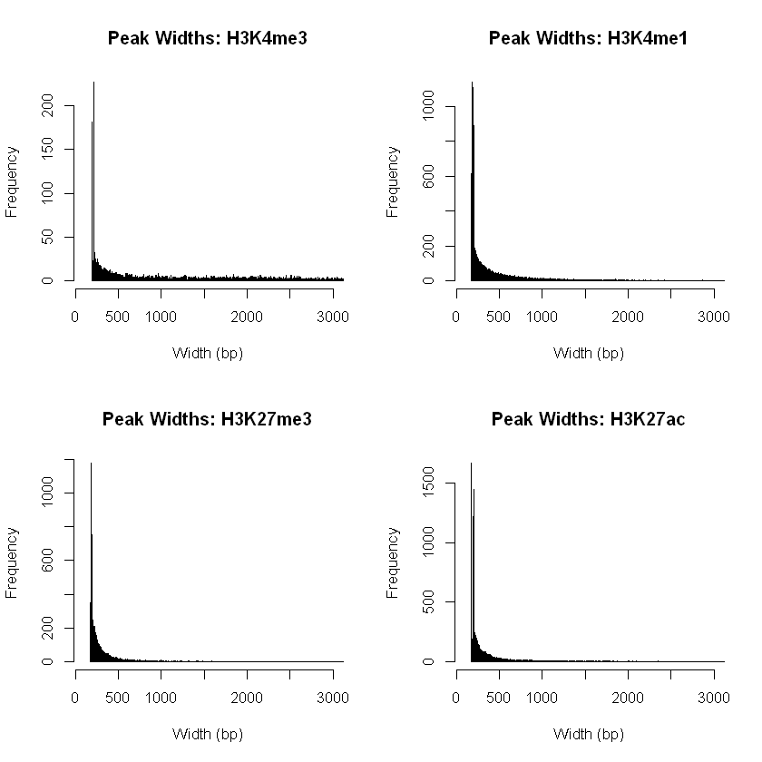
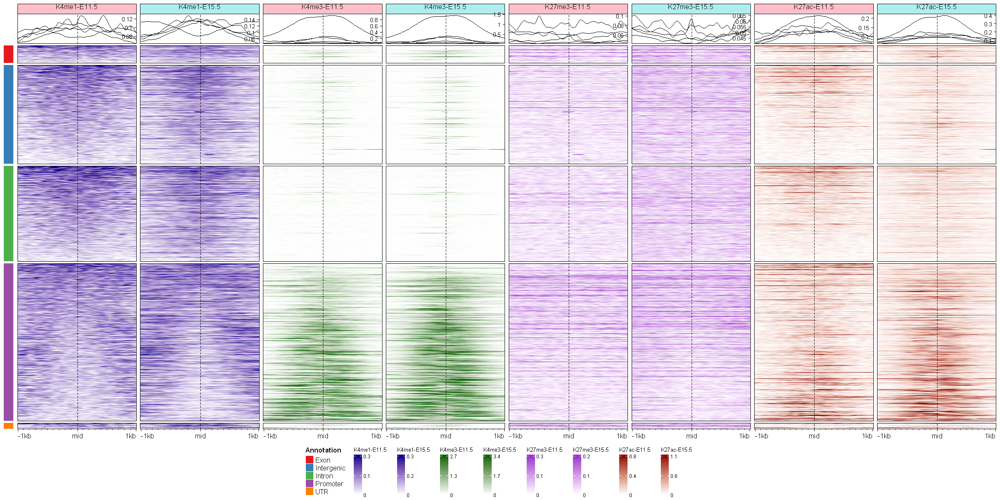
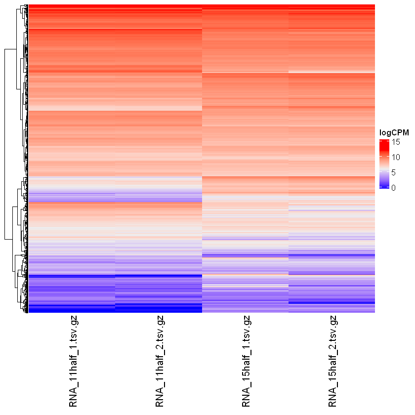
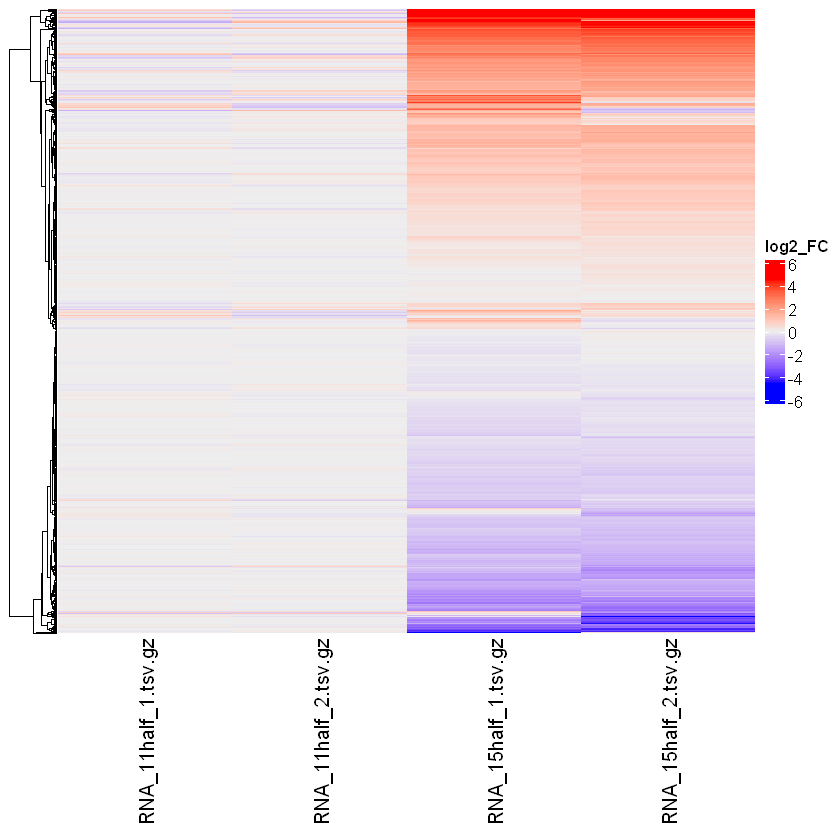
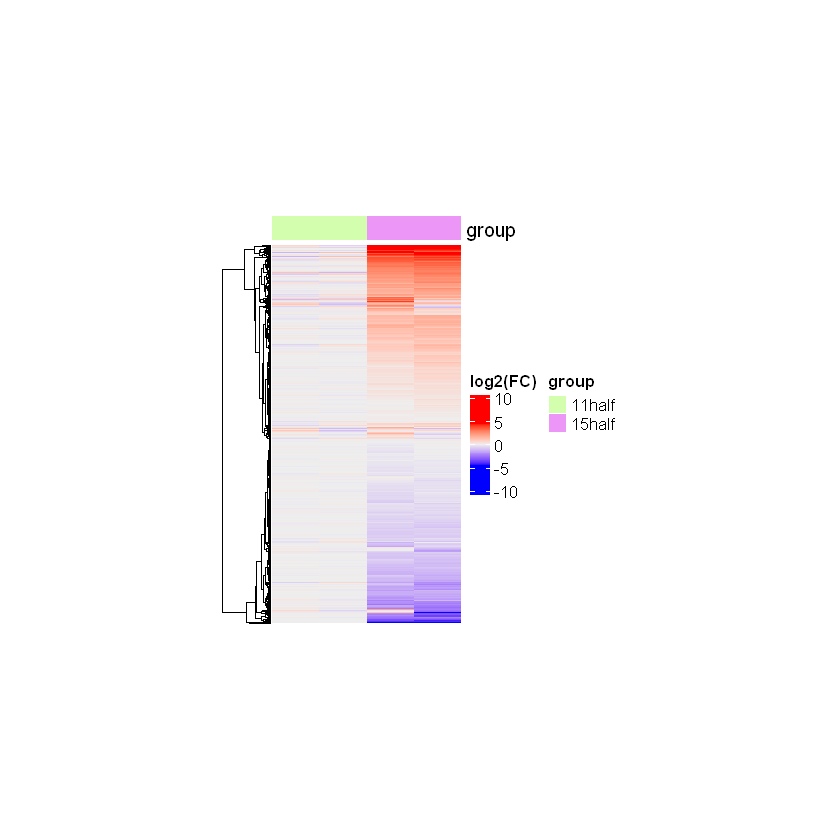
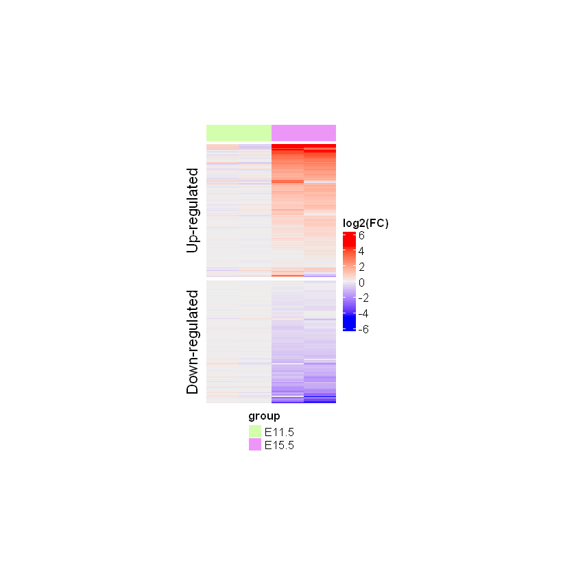

Code
suppressPackageStartupMessages(suppressWarnings({
library(SummarizedExperiment)
library(GenomicRanges)
library(EnrichedHeatmap)
library(ComplexHeatmap)
library(gUtils)
library(rtracklayer)
library(circlize)
}))SummarizedExperiment objects for ChIP-seq and RNA-seq data.EnrichedHeatmap package.ComplexHeatmap package.suppressPackageStartupMessages(suppressWarnings({
library(SummarizedExperiment)
library(GenomicRanges)
library(EnrichedHeatmap)
library(ComplexHeatmap)
library(gUtils)
library(rtracklayer)
library(circlize)
}))As in the first notebook, we load the SummarizedExperiment for the ChIP-seq data.
h3k4me3 <- readRDS("data/h3k4me3_se.rds")
h3k4me1 <- readRDS("data/h3k4me1_se.rds")
h3k27me3 <- readRDS("data/h3k27me3_se.rds")
h3k27ac <- readRDS("data/h3k27ac_se.rds")We check the structure of one of these objects.
h3k4me3class: RangedSummarizedExperiment
dim: 4936 4
metadata(2): final.ext param
assays(2): counts logCPM
rownames: NULL
rowData names(18): annotation geneChr ... PValue qvalue
colnames: NULL
colData names(6): bam.files totals ... group norm.factorscolData(h3k4me3)DataFrame with 4 rows and 6 columns
bam.files totals ext rlen group norm.factors
<character> <integer> <integer> <integer> <character> <numeric>
1 ../data/H3K4me3_11ha.. 38077388 100 36 11half 0.922457
2 ../data/H3K4me3_11ha.. 33020628 100 36 11half 0.852379
3 ../data/H3K4me3_15ha.. 78731363 100 49 15half 1.119011
4 ../data/H3K4me3_15ha.. 91317562 100 49 15half 1.136546rd_h3k4me3 <- rowRanges(h3k4me3)
rd_h3k4me3GRanges object with 4936 ranges and 18 metadata columns:
seqnames ranges strand | annotation geneChr
<Rle> <IRanges> <Rle> | <character> <integer>
[1] chr1 3667266-3667503 * | Intron (ENSMUST00000.. 1
[2] chr1 3668238-3668743 * | Intron (ENSMUST00000.. 1
[3] chr1 3669041-3672787 * | Promoter (<=1kb) 1
[4] chr1 4491514-4493868 * | Promoter (<=1kb) 1
[5] chr1 4496194-4496402 * | Promoter (<=1kb) 1
... ... ... ... . ... ...
[4932] chr2 181765975-181766393 * | Promoter (<=1kb) 2
[4933] chr2 181766549-181770566 * | Promoter (<=1kb) 2
[4934] chr2 181837343-181839141 * | Promoter (<=1kb) 2
[4935] chr2 181863316-181865849 * | Promoter (<=1kb) 2
[4936] chr2 181953101-181953592 * | Distal Intergenic 2
geneStart geneEnd geneLength geneStrand geneId
<integer> <integer> <integer> <integer> <character>
[1] 3214482 3671498 457017 2 497097
[2] 3214482 3671498 457017 2 497097
[3] 3214482 3671498 457017 2 497097
[4] 4492465 4493735 1271 2 20671
[5] 4491713 4496363 4651 2 20671
... ... ... ... ... ...
[4932] 181767029 181795892 28864 1 17932
[4933] 181767029 181795892 28864 1 17932
[4934] 181837854 181857461 19608 1 245867
[4935] 181864337 181870830 6494 1 67005
[4936] 181991129 182003861 12733 1 672125
transcriptId distanceToTSS ENSEMBL SYMBOL
<character> <numeric> <character> <character>
[1] ENSMUST00000070533.4 3995 ENSMUSG00000051951 Xkr4
[2] ENSMUST00000070533.4 2755 ENSMUSG00000051951 Xkr4
[3] ENSMUST00000070533.4 0 ENSMUSG00000051951 Xkr4
[4] ENSMUST00000191939.1 0 ENSMUSG00000025902 Sox17
[5] ENSMUST00000116652.7 0 ENSMUSG00000025902 Sox17
... ... ... ... ...
[4932] ENSMUST00000156190.7 -636 ENSMUSG00000010505 Myt1
[4933] ENSMUST00000156190.7 0 ENSMUSG00000010505 Myt1
[4934] ENSMUST00000029116.13 0 ENSMUSG00000027589 Pcmtd2
[4935] ENSMUST00000039551.8 0 ENSMUSG00000038628 Polr3k
[4936] ENSMUST00000071760.7 -37537 ENSMUSG00000098505 Gm14496
GENENAME anno logFC logCPM F
<character> <character> <numeric> <numeric> <numeric>
[1] X-linked Kx blood gr.. Intron -0.373770 2.28064 0.2530847
[2] X-linked Kx blood gr.. Intron 1.861338 3.79682 16.3418021
[3] X-linked Kx blood gr.. Promoter 0.607114 9.26749 135.4429255
[4] SRY (sex determining.. Promoter -0.259414 6.39021 3.9624216
[5] SRY (sex determining.. Promoter -0.195908 2.51613 0.0873602
... ... ... ... ... ...
[4932] myelin transcription.. Promoter -1.42147743 3.08745 10.2690521
[4933] myelin transcription.. Promoter 0.50942696 8.25885 50.8903963
[4934] protein-L-isoasparta.. Promoter -0.00811134 7.80433 0.0102742
[4935] polymerase (RNA) III.. Promoter -0.13758781 8.78019 5.6852857
[4936] predicted gene 14496 Intergenic 0.40807614 4.43807 1.9921177
PValue qvalue
<numeric> <numeric>
[1] 6.14925e-01 7.15697e-01
[2] 5.33720e-05 2.50660e-04
[3] 4.65079e-31 1.28968e-29
[4] 4.65601e-02 9.65633e-02
[5] 7.67568e-01 8.34518e-01
... ... ...
[4932] 1.35802e-03 4.81764e-03
[4933] 1.06052e-12 1.19242e-11
[4934] 9.19266e-01 9.43150e-01
[4935] 1.71305e-02 4.32734e-02
[4936] 1.58158e-01 2.56714e-01
-------
seqinfo: 33 sequences from an unspecified genome; no seqlengthsHistone methylation (especially active marks like H3K4me3 at promoters) can have very sharp, well-defined boundaries compared to the broader regions of accessibility we see in ATAC-seq or repressive marks.
cat("Summary statistics of H3K4me3 peak width:")
summary(width(rd_h3k4me3))Summary statistics of H3K4me3 peak width: Min. 1st Qu. Median Mean 3rd Qu. Max.
191.0 279.8 749.0 1283.9 2009.0 18723.0 We can actually directly compare the peak width distributions and “sharpness” for all the ChIP-seq datasets using histograms.
# Create a named list of your 4 SE objects
se_list <- list(
"H3K4me3" = h3k4me3,
"H3K4me1" = h3k4me1,
"H3K27me3" = h3k27me3,
"H3K27ac" = h3k27ac)
# Set the plotting layout to 2 rows by 2 columns
par(mfrow = c(2, 2))
# Loop through the list
for (mark_name in names(se_list)) {
# Extract the specific SE object
se <- se_list[[mark_name]]
# Extract the genomic ranges
gr <- rowRanges(se)
# Plot the histogram
hist(
width(gr),
breaks = 10000,
xlim = c(100, 3000), # Zoom in on widths up to 3000bp
main = paste("Peak Widths:", mark_name),
xlab = "Width (bp)"
)
}
# Reset the layout back to a standard 1x1 plot when done
par(mfrow = c(1, 1))
Histone modifications (like H3K4me3 or H3K27ac) are physically attached to the histone proteins that make up a nucleosome. A single nucleosome wraps roughly 147 base pairs of DNA. Because the modification sits on the nucleosome, the absolute minimum biological “footprint” that can be captured is the size of one nucleosome (around ~150 bp), like we observe on the histograms.
Moreover, during the ChIP-seq protocol, the DNA is physically sheared (via sonication or enzymatic digestion) before sequencing. We typically aim to shear the DNA into fragments of about 200 to 500 base pairs. Because the sequence reads come from the ends of these fragments, it is virtually impossible for the sequencing to resolve a peak that is narrower than the size of the fragments we physically cut the DNA into.
Furthermore, the software used to detect these peaks (usually MACS2) has built-in parameters to filter out noise. MACS2 models the average fragment length (which it often estimates to be ~150-250 bp) and deliberately ignores or merges signal that is smaller than that expected fragment size, because a 30 bp “peak” is almost certainly just random sequencing noise rather than a true modified nucleosome.
While H3K4me3 is typically a sharp mark found at promoters (~200–1000 bp), we observe a subset of peaks extending well beyond 3,000 bp. These broad H3K4me3 domains are a well-documented biological phenomenon that typically mark highly transcribed, lineage-defining genes with large CpG islands or multiple transcription start sites.
Similar to ATAC-seq data, please create EnrichedHeatmap for all ChIP-seq datasets and observe difference in genome activity at different genomic regions.
The goal of this exercise is to visualize and compare the spatial distribution of four different histone modifications (H3K4me3, H3K4me1, H3K27ac, H3K27me3) across specific genomic regions to infer chromatin state and genome activity.
To accurately compare the histone marks, we need a common set of genomic anchor regions. Since ATAC-seq peaks represent all open chromatin (both promoters and enhancers), we can use the ATAC-seq peak centers (generated in the previous notebook) as our universal anchor points. Alternatively, we could combine the peak ranges from all 4 ChIP-seq objects into a consensus set, but using the ATAC peaks is conceptually cleaner as it defines “all potentially active regulatory regions.” (And I have the intuition that we would finally combine all of this data at the end of the course ;-)
Because ATAC-seq captures open chromatin, using it as our “universal anchor” creates a massive bias. It works beautifully for H3K4me3, H3K4me1, and H3K27ac because those marks actively push the chromatin open. But what about H3K27me3 (the repressive mark)? If a genomic region is heavily repressed by H3K27me3, the chromatin there is tightly closed (inactive). Because it is closed, the ATAC-seq machinery can’t get in, meaning there is no ATAC-seq peak there.
If we force H3K27me3 to be plotted using ATAC-seq anchors, we will only see H3K27me3 at weird, transitioning, or “bivalent” regions that happen to be slightly open. We will completely blind ourselves to the deeply repressed, true heterochromatin regions where H3K27me3 is actually the strongest.
The final visualization will be a highly informative, multi-panel composite heatmap generated via the EnrichedHeatmap and ComplexHeatmap packages, as we learned throughout the previous notebook:
We will rely on the ATAC-seq data processed in the previous notebook, specifically extracting the rowRanges from the ATAC-seq SummarizedExperiment and filtering for significantly differentially accessible regions (using qvalue and logFC thresholds) exclusively on chromosomes 1 and 2.
Also remind that once we have isolated these significant ATAC-seq peaks, we used the resize(width = 1, fix = "center") function to collapse each peak down to its exact 1-bp midpoint. These midpoints will now serve as the universal anchors for our EnrichedHeatmap windows, ensuring that all 4 ChIP-seq datasets are visualized and compared across the exact same spatial coordinates.
# Loading the ATAC-seq dataset
atac <- readRDS("data/atac_se.rds")
# Extracting the Genomic Ranges
rd_atac <- rowRanges(atac)
# Filtering by logFC, qvalue and seqnames (chromosomes)
rd_atac_filtered <- subset(
rd_atac,
abs(logFC) >= 0.5 &
qvalue <= 0.1 &
seqnames %in% c("chr1", "chr2"))
# Add an "ATAC_" prefix to all the metadata columns in rd_atac_filtered
# (!GOOD PRACTICE preventing multi-omics collisions)
colnames(elementMetadata(rd_atac_filtered)) <- paste(
"ATAC", colnames(elementMetadata(rd_atac_filtered)), sep = "_"
)
# Finding peak centers
mid_peaks <- resize(rd_atac_filtered, width = 1, fix = "center")
# Identify the ATAC peaks
# (!GOOD PRACTICE for traceability)
names(mid_peaks) <- paste("peak", 1:length(mid_peaks), sep = "_")head(mid_peaks, 3)GRanges object with 3 ranges and 18 metadata columns:
seqnames ranges strand | ATAC_annotation ATAC_geneChr
<Rle> <IRanges> <Rle> | <character> <integer>
peak_1 chr1 3671606 * | Promoter (<=1kb) 1
peak_2 chr1 4332610 * | Intron (ENSMUST00000.. 1
peak_3 chr1 4492164 * | Promoter (1-2kb) 1
ATAC_geneStart ATAC_geneEnd ATAC_geneLength ATAC_geneStrand
<integer> <integer> <integer> <integer>
peak_1 3214482 3671498 457017 2
peak_2 4344146 4360314 16169 2
peak_3 4492465 4493735 1271 2
ATAC_geneId ATAC_transcriptId ATAC_distanceToTSS ATAC_ENSEMBL
<character> <character> <numeric> <character>
peak_1 497097 ENSMUST00000070533.4 0 ENSMUSG00000051951
peak_2 19888 ENSMUST00000027032.5 27604 ENSMUSG00000025900
peak_3 20671 ENSMUST00000191939.1 1162 ENSMUSG00000025902
ATAC_SYMBOL ATAC_GENENAME ATAC_anno ATAC_logFC ATAC_logCPM
<character> <character> <character> <numeric> <numeric>
peak_1 Xkr4 X-linked Kx blood gr.. Promoter 0.602984 10.45378
peak_2 Rp1 retinitis pigmentosa.. Intron 0.855748 5.18424
peak_3 Sox17 SRY (sex determining.. Promoter -0.620926 7.13469
ATAC_F ATAC_PValue ATAC_qvalue
<numeric> <numeric> <numeric>
peak_1 41.78446 6.58453e-08 4.81983e-07
peak_2 3.68371 6.13517e-02 9.28785e-02
peak_3 9.14522 4.12368e-03 8.38540e-03
-------
seqinfo: 21 sequences from an unspecified genome; no seqlengthsTo extract the continuous ChIP-seq signal, we first retrieve the paths for the 8 ChIP-seq .bw (bigWig) files from the data/ directory. Next, we define our target extraction regions, or heatmap_windows, by expanding our ATAC mid_peaks to the desired viewing window size (for example, using resize(mid_peaks, width = 2000, fix = "center"), just as we did in the previous notebook).
Because there is exactly one bigWig file per condition (4 histone marks × 2 developmental stages), the most elegant and “R-like” approach is to grab all 8 files at once and process them using a single lapply() function, rather than writing complicated nested loops. Within this single loop, we use rtracklayer::import() and pass our specific windows to the which argument. This forces R to dynamically read the continuous signal coverage only within our exact targeted regions directly from the hard drive, massively saving RAM and computation time.
Once the targeted signal is read, the exact same loop immediately feeds it into normalizeToMatrix(), outputting a clean list of 8 normalized matrices ready for EnrichedHeatmap.
# Get all 8 ChIP-seq bigWig files at once using the regex:
# ^H3K -> The file name MUST start with "H3K" (ignores the ATAC files)
# .* -> Followed by any sequence of characters (e.g., "4me3_11half")
# \\.bw$ -> And MUST end exactly with the literal ".bw" extension
chip_bw_files <- list.files("data", pattern = "^H3K.*\\.bw$", full.names = TRUE)
# Give them clean names for the list (e.g., "H3K4me3_11half")
names(chip_bw_files) <- gsub("\\.bw$", "", basename(chip_bw_files))
# Define the actual 2000 bp windows we need for the heatmap
heatmap_windows <- resize(mid_peaks, width = 2000, fix = "center")
# Use a single lapply loop to process all 8 files
chip_matrices <- lapply(chip_bw_files, function(file_path) {
# Import ONLY the regions overlapping our heatmap_windows
signal <- rtracklayer::import(file_path, which = heatmap_windows)
# Convert the signal to a normalized matrix for EnrichedHeatmap
mat <- normalizeToMatrix(
signal, # bigWig data
target = mid_peaks, # anchor ("point 0")
value_column = "score", # read coverage values
extend = 1000, # 2 kb-wide window
w = 20, # binning size of 20 bp
smooth = TRUE, # LOESS smoothing
background = 0 # noise floor
)
return(mat)
})# View of few columns and peaks from the first matrix
chip_matrices[[1]][1:5, 45:50]| u45 | u46 | u47 | u48 | u49 | u50 | |
|---|---|---|---|---|---|---|
| peak_1 | 0.41785877 | 0.36655732 | 0.34175880 | 0.35650114 | 0.41155756 | 0.46620710 |
| peak_2 | 0.01211658 | 0.02286782 | 0.03310115 | 0.03916861 | 0.04122399 | 0.03931726 |
| peak_3 | 0.11026432 | 0.07951743 | 0.05068564 | 0.03356038 | 0.02665345 | 0.02502023 |
| peak_4 | 0.69515939 | 0.68179722 | 0.65382211 | 0.61544447 | 0.56406654 | 0.51900573 |
| peak_5 | 0.12519382 | 0.12562346 | 0.13146672 | 0.14713624 | 0.17450900 | 0.20114145 |
With our list of 8 normalized matrices prepared, we can now translate this numerical data into a visual map of the chromatin landscape. We will generate an individual EnrichedHeatmap object for each matrix. To streamline this process and ensure perfect formatting consistency, we will utilize an upgraded custom wrapper function (make_EH_custom). Rather than building each heatmap from scratch, this function automates several advanced features: 1. Dynamic Color Scaling: It automatically calculates a responsive color scale based on the 1st and 99th percentiles of each specific matrix (using circlize::colorRamp2), and perfectly aligns the legend ticks. 2. Proportional Layout Engine: By defaulting to the grid graphic’s flexible width = unit(1, "null") unit, it ensures that when we stitch multiple heatmaps together, they will dynamically stretch and divide the page space perfectly equally! Here is the perfectly tweaked bullet point to clarify that your hardcoded default precisely mirrors the native software! 3. Architectural Control: It exposes a top_anno_height parameter (which we safely defaulted to 1.5 cm to precisely mirror the software’s native default behavior), giving us the ability to elegantly squeeze or expand the vertical size of the top summary meta-profile plots on the fly without complex math.
Note: This custom function has pre-defined x-axis labels hard-coded as c("-1kb", "mid", "1kb"). In the future, if the genomic window being analyzed is different from the current 2000 bp window centered on the ATAC-seq peaks, be sure to make the appropriate changes to the axis_name argument.
To highlight how these marks behave differently across distinct regulatory elements, we will pass our ATAC peak annotations to the split_rows argument (separating, “Promoters” from “Exon”, “Intron” and “Intergenic” regions).
Finally, leveraging the power of the ComplexHeatmap ecosystem, we can seamlessly concatenate all 8 resulting heatmaps side-by-side using the simple + operator. Just as we did before, we will also append a rowAnnotation block to the side of the figure—visually tagging the rows with their associated metadata—to create a highly informative, unified composite figure.
# Upgraded version of the original custom function
make_EH_custom <- function(
norm_mat, hm_name, split_rows = NULL,
width = unit(1, "null"), height = NULL, top_anno_height = grid::unit(1.5, "cm"),
heatmap_cols = c("white", "red"), col_fill = "white",
line_colors = NULL) {
# Calculate ticks for the legend
vmin <- as.numeric(quantile(norm_mat, c(0.01)))
vmax <- as.numeric(quantile(norm_mat, c(0.99)))
vmid <- (vmin + vmax) / 2
legend_ticks <- c(vmin, vmid, vmax)
# Define color scale based on 1st and 99th percentiles (vmin and vmax)
col_fun <- colorRamp2(c(vmin, vmax), heatmap_cols)
# Generate and return the heatmap
EnrichedHeatmap(
mat = norm_mat, name = hm_name, row_split = split_rows,
row_title = NULL, col = col_fun, column_title = hm_name,
column_title_gp = gpar(fontsize = 10, fill = col_fill),
width = width, height = height,
axis_name = c("-1kb", "mid", "1kb"),
heatmap_legend_param = list(
at = legend_ticks, labels = round(legend_ticks, digits = 1),
title_gp = gpar(fontsize = 8), labels_gp = gpar(fontsize = 7)),
top_annotation = HeatmapAnnotation(
lines = anno_enriched(
height = top_anno_height,
axis_param = list(
# gp = gpar(fontsize = 7, lwd = 0.4),
side = "right", facing = "inside"),
gp = gpar(col = line_colors))))}Let’s now create the indicudal heatmaps objects, using colors similar to what is shown on the course logo.
names(chip_matrices)# Heatmaps for the H3K4me1 data
# REMINDER - `[ ]`returns a list, while `$ ` (or `[[ ]]`)
# returns the actual object inside the list.
eh_h3k4me1_11h <- make_EH_custom(
norm_mat = chip_matrices$H3K4me1_11half,
hm_name = 'K4me1-E11.5',
col_fill = 'pink',
# width = unit(2, "cm"), height = unit(8, "cm"),
heatmap_cols = c('white', 'darkblue'))
eh_h3k4me1_15h <- make_EH_custom(
norm_mat = chip_matrices$H3K4me1_15half,
hm_name = 'K4me1-E15.5',
col_fill = 'paleturquoise',
# width = unit(2, "cm"), height = unit(8, "cm"),
heatmap_cols = c('white', 'darkblue'))# Heatmaps for the H3K4me3 data
eh_h3k4me3_11h <- make_EH_custom(
norm_mat = chip_matrices$H3K4me3_11half,
hm_name = 'K4me3-E11.5',
col_fill = 'pink',
heatmap_cols = c('white', 'darkgreen'))
eh_h3k4me3_15h <- make_EH_custom(
norm_mat = chip_matrices$H3K4me3_15half,
hm_name = 'K4me3-E15.5',
col_fill = 'paleturquoise',
heatmap_cols = c('white', 'darkgreen'))# Heatmaps for the H3K27me3 data
eh_h3k27me3_11h <- make_EH_custom(
norm_mat = chip_matrices$H3K27me3_11half,
hm_name = 'K27me3-E11.5',
col_fill = 'pink',
heatmap_cols = c('white', 'darkorchid'))
eh_h3k27me3_15h <- make_EH_custom(
norm_mat = chip_matrices$H3K27me3_15half,
hm_name = 'K27me3-E15.5',
col_fill = 'paleturquoise',
heatmap_cols = c('white', 'darkorchid'))# Heatmaps for the H3K27ac data
eh_h3k27ac_11h <- make_EH_custom(
norm_mat = chip_matrices$H3K27ac_11half,
hm_name = 'K27ac-E11.5',
col_fill = 'pink',
heatmap_cols = c('white', 'darkred'))
eh_h3k27ac_15h <- make_EH_custom(
norm_mat = chip_matrices$H3K27ac_15half,
hm_name = 'K27ac-E15.5',
col_fill = 'paleturquoise',
heatmap_cols = c('white', 'darkred'))# Retrieve the genomic annotations (e.g., "Promoter", "Intron", "Intergenic")
split_anno <- mid_peaks$ATAC_anno
# Attach the original peak IDs as names to this new vector
names(split_anno) <- names(mid_peaks)
anno_colors <- RColorBrewer::brewer.pal(
n = length(unique(split_anno)), name = "Set1")
names(anno_colors) <- sort(unique(split_anno))
# Prepare the annotations
eh_annotations <- rowAnnotation(
df = data.frame(Annotation = split_anno),
col = list(Annotation = anno_colors),
show_annotation_name = FALSE
)In the ComplexHeatmap ecosystem, when we combine heatmaps using +, they are merged together into a single master object called a HeatmapList. Because the rows are strictly locked together across all 8 heatmaps, we don’t need to split them individually.
By passing split = split_anno directly into the draw() function, we are applying the split globally to the entire composite figure at the very end. We don’t have to pass split_rows 8 separate times in our make_EH_custom function, which guarantees that every single heatmap is forced to split in the exact same way simultaneously. Moreover, R only has to calculate the splitting logic once for the master figure, rather than recalculating it 8 times!
options(repr.plot.width = 20, repr.plot.height = 10)
draw(
eh_annotations
+ eh_h3k4me1_11h + eh_h3k4me1_15h
+ eh_h3k4me3_11h + eh_h3k4me3_15h
+ eh_h3k27me3_11h + eh_h3k27me3_15h
+ eh_h3k27ac_11h + eh_h3k27ac_15h,
split = split_anno,
# merge_legend = TRUE,
heatmap_legend_side = "bottom")
Note: Because we allowed each histone mark to dynamically scale its colors based on its own signal strength (i.e., the color scale is dynamically calculated based on the 1st and 99th percentiles of each individual matrix), we must have separate legends. This means the actual numeric scale is different for every single heatmap. Moreover, merge_legend only combines legends that share the exact same title. Therefore, the merge_legend argument has no effect here.
In the composite heatmap, the H3K4me3 signal is entirely restricted to the violet (Promoter) block and absent everywhere else. As the canonical “Active Promoter” mark, H3K4me3 is dynamically placed directly around the Transcription Start Site (TSS) by specific enzymes (like MLL/COMPASS complexes) that associate with the transcription machinery. Seeing this signal cleanly restricted to the promoter block confirms the high quality of the data and strictly adheres to expected biological principles.
Unlike H3K4me3, H3K27ac marks both active promoters and active enhancers, which perfectly explains its strong presence across the promoter, intergenic, and intronic blocks. Interestingly, a temporal shift is visible: H3K27ac signal is higher in distal regions (intergenic/introns) at E11.5, but becomes relatively stronger at promoters by E15.5. This represents a classic developmental signature. At E11.5, cells are still highly plastic and maintain massive networks of active distal enhancers. As they mature to E15.5, many of these broad enhancer networks shut down, while specific terminal genes become aggressively transcribed.
A striking feature of the visualization is the distinct lack of signal (white space) directly in the middle of the promoters for H3K4me1 and, to a lesser extent, H3K27me3. Because these heatmaps are centered precisely on ATAC-seq peaks, the exact middle (mid) represents open chromatin where nucleosomes have been physically displaced to allow transcription factors to bind. Since histone marks require a histone protein to attach to, the signal completely drops to zero in this physical “hole,” resulting in a characteristic bimodal (twin-peak) signal on the flanking nucleosomes. Furthermore, because H3K4me1 is traditionally an enhancer mark, the central nucleosomes at active promoters get heavily decorated with H3K4me3 instead, physically displacing H3K4me1 to the outer edges and explaining the wide central “dip.”
Overall, the visualization successfully captures the known epigenetic landscape: H3K4me3 strictly identifies active promoters, H3K27ac identifies both promoters and enhancers while highlighting developmental transitions, and the fine spatial resolution accurately maps nucleosome depletion directly at the ATAC-seq peak centers.
Having deeply explored the spatial distribution of chromatin accessibility (ATAC-seq; previous notebook) and histone modifications (ChIP-seq) across regulatory elements, we now shift our focus to the functional output of these epigenetic changes: gene expression.
Unlike ChIP-seq, where we used EnrichedHeatmap to visualize the continuous spatial footprint of modifications across 2kb genomic windows, RNA-seq data is fundamentally different. Here, we are working with discrete transcription levels quantified as normalized read counts per gene. Therefore, the heatmaps we generate in this section will be standard expression heatmaps (where rows represent individual genes, columns represent experimental conditions, and color intensity reflects the expression level). This will allow us to identify clusters of co-regulated genes and track how expression profiles shift between E11.5 and E15.5.
To begin, we will load the SummarizedExperiment object containing our processed RNA-seq count matrices and associated metadata.
rna <- readRDS("data/rna_se.rds")
rnaclass: RangedSummarizedExperiment
dim: 2216 4
metadata(0):
assays(2): counts logCPM
rownames(2216): ENSMUSG00000000194 ENSMUSG00000000247 ...
ENSMUSG00000103948 ENSMUSG00000104257
rowData names(18): Row.names gene_id ... PValue qvalue
colnames(4): RNA_11half_1.tsv.gz RNA_11half_2.tsv.gz
RNA_15half_1.tsv.gz RNA_15half_2.tsv.gz
colData names(2): sample groupIn a typical RNA-seq experiment, finding 1,000 to 4,000 significant Differentially Expressed Genes (DEGs) is a very normal, healthy result👍
To visualize the global gene expression profile, we will switch from EnrichedHeatmap to the Heatmap() function from the ComplexHeatmap package (different from the heatmap() function from base R).
Instead of plotting raw read counts, which are heavily skewed by total sequencing depth and extreme outliers, we extract the logCPM (log2 Counts Per Million) matrix directly from the SummarizedExperiment object. The logCPM transformation normalizes the data for library size and compresses the massive dynamic range of RNA expression into a scale that is much better suited for visual clustering.
# Back to standard Jupyter Notebook plotting options
options(repr.plot.width = 7, repr.plot.height = 7)Heatmap(
matrix = as.matrix(assay(rna, "logCPM")),
name = "logCPM", # internal name of the heatmap; also used for the legend title
cluster_columns = FALSE, # prevents automatic sample rearrangement
show_row_names = FALSE
)
Plotting absolute logCPM is useful for seeing overall expression levels, but it can make it difficult to quickly spot dynamic changes between the developmental stages. A gene that is constantly highly expressed will visually overwhelm a lowly expressed gene that dramatically doubles in transcription.
To make the developmental shifts immediately obvious, we can transform our absolute expression matrix into a relative expression matrix. Because our data is already on a log2 scale, we can easily approximate the log-fold change simply by subtracting the baseline expression (the mean of the E11.5 samples) from every sample in the matrix.
By centering the data on E11.5, the E11.5 columns will become effectively zero (our baseline). The E15.5 columns will then reflect the relative change: positive values will indicate genes that are up-regulated as development proceeds, while negative values will indicate genes that are down-regulated.
# Extract the data and immediately cast to a true numeric matrix
log_cpm <- as.matrix(assay(rna, "logCPM"))
# Identify the columns belonging to the E11.5 baseline group
idx_11half <- grep(
pattern = "11half",
x = colnames(log_cpm))
# Subtract the E11.5 baseline mean (row-by-row)
counts_fc <- log_cpm - rowMeans(log_cpm[, idx_11half])Heatmap(
matrix = counts_fc,
name = "log2_FC", # no parenthesis allowed in the name!
cluster_columns = FALSE,
show_row_names = FALSE
)
Note: while we are manually calculating these relative fold-changes across the matrix columns to generate a centered heatmap here, we will extract and analyze the rigorously calculated statistical logFC from the differential analysis table later in the notebook.
Now that our heatmap matrix is structured correctly, we can improve the aesthetics by adding a color-coded annotation bar to the top of our columns. This visually identifies which samples belong to E11.5 and E15.5 at a single glance, without the reader needing to squint at the text labels.
To achieve this, we extract the sample metadata directly from the rna object using colData(). In addition, we take advantage of the scales package: its pretty_breaks function dynamically looks at the minimum and maximum values of our matrix to calculate exactly 3 “pretty” (round) numbers for our legend ticks. Finally, we adjust the width and height slightly to make the heatmap look more professional.
Tip: The drop = FALSE argument prevents a single-column data.frame from collapsing into a nameless vector. This ensures HeatmapAnnotation receives a true dataframe (always check the documentation…) and can automatically pull the correct label name (like “Group” or “Stage”).
colData(rna)DataFrame with 4 rows and 2 columns
sample group
<character> <factor>
RNA_11half_1.tsv.gz RNA_11half_1.tsv.gz 11half
RNA_11half_2.tsv.gz RNA_11half_2.tsv.gz 11half
RNA_15half_1.tsv.gz RNA_15half_1.tsv.gz 15half
RNA_15half_2.tsv.gz RNA_15half_2.tsv.gz 15halfset.seed(100) # Forces R to always pick the exact same "random" colors
Heatmap(
matrix = counts_fc,
# name = "log2_FC",
cluster_columns = FALSE,
show_row_names = FALSE,
show_column_names = FALSE,
top_annotation = HeatmapAnnotation(
df = colData(rna)[ , 'group', drop = FALSE]
),
width = unit(4, "cm"),
height = unit(8, "cm"),
heatmap_legend_param = list(
at = scales::pretty_breaks(n = 3)(
range(counts_fc, na.rm = TRUE)),
title = "log2(FC)" # fancier display name
)
)
Similar to EnrichedHeatmap, we can also split RNA-seq data based on logFC. Can you try to do this?
Just as we split our spatial ChIP-seq heatmaps by genomic regions (Promoter vs Intergenic), we can split our RNA-seq expression heatmap by gene behavior. The most logical way to do this is to physically separate the genes based on their statistical fold-change (logFC).
We will extract the pre-calculated statistical logFC from the rowData(rna) metadata. Because logFC is a continuous number, we must convert it into distinct, discrete groups (e.g., “Up-regulated” and “Down-regulated”) so the software knows how to draw the split. We then simply pass this new grouping vector directly into the row_split argument of our Heatmap() function.
# Extract the statistical logFC for all genes
# Remind rowRanges stores the physical genomic coordinates,
# while rowData stores the statistical metadata as a DataFrame
logFC <- rowData(rna)[, "logFC"]
summary(logFC) Min. 1st Qu. Median Mean 3rd Qu. Max.
-6.94492 -0.60775 0.05993 0.31056 0.98024 8.98301 # Categorize the genes (here we split strictly at 0), but we can
# change the 0 to 1 or 2 if we want to be more strict
gene_status <- ifelse(logFC > 0, "Up-regulated", "Down-regulated")We can rename the factor levels in the rna metadata to the corresponding biological names before we draw the heatmap.
colData(rna)$group <- ifelse(
colData(rna)$group == "11half", "E11.5", "E15.5")By default, heatmaps are rendered automatically upon creation. To gain precise control over the layout of our various legends, we first save the heatmap to an object and then explicitly render it using the draw() function. During this construction phase, we also apply a critical aesthetic trick: by passing show_annotation_name = FALSE deep inside the HeatmapAnnotation() function, we force the engine to hide the redundant column grouping label. Without this specific override, ComplexHeatmap would forcefully print the word “group” on the far right edge of the plot, creating an ugly, illegible text collision overlapping directly on top of our heatmap colors.
set.seed(100)
ht <- Heatmap(
matrix = counts_fc,
row_split = gene_status,
cluster_columns = FALSE,
show_row_names = FALSE,
show_column_names = FALSE,
show_row_dend = FALSE,
width = unit(4, "cm"), height = unit(8, "cm"),
top_annotation = HeatmapAnnotation(
df = colData(rna)[,2, drop = FALSE],
show_annotation_name = FALSE # Remove 'group' annotation name
),
heatmap_legend_param = list(title = "log2(FC)")
)
draw(ht, annotation_legend_side = "bottom", heatmap_legend_side = "right")
By manually centering the matrix, we preserve all 4 individual columns (samples). This allows us to visually verify replicate consistency, observe the underlying biological noise, and see exactly how each sample behaves within its group. In contrast, the true logFC is a single, aggregated statistical value per gene. Plotting it directly would result in a 1-column heatmap that completely hides sample-level variability.
There are many valid ways to visualize RNA-seq data, and we will cover other powerful methods for displaying these statistical results later in the course. For a deeper dive into standard RNA-seq workflows, differential expression statistics, and visualizations, you can refer to my previous RNA-seq course on GitHub.